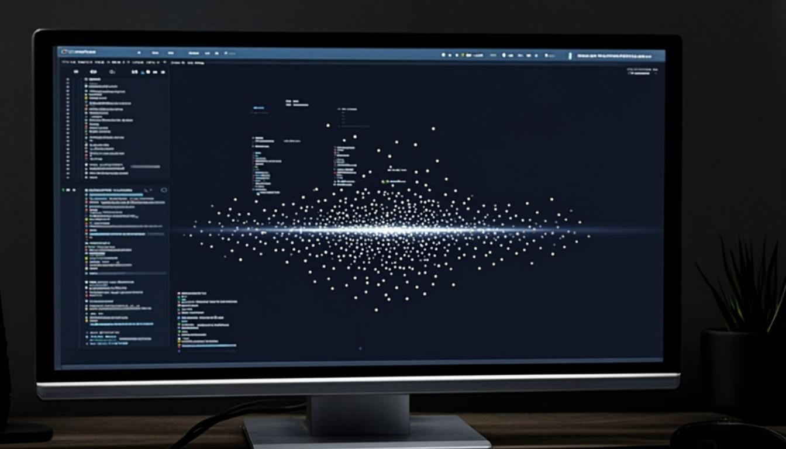

DevCrm 03 - Мягкое удаление и корзина в CRM на WPF: как я перестал терять клиентов
**Лид:** Менеджер промахнулся мимо «Сохранить» — и клиент исчез из базы навсегда. Разбор мягкого удаления и корзины в CRM на WPF: флаг IsDeleted, фильтр списка, восстановление одним нажатием, права при удалении и код, который это держит.
Менеджер промахнулся мимо «Сохранить» — и клиент исчез из базы навсегда. Разбор мягкого удаления и корзины в CRM на WPF: флаг IsDeleted, фильтр списка, восстановление одним нажатием, права при удалении и код, который это держит.
Не про страшные аварии и не про ошибки в коде. Про банальную усталость вторника: менеджер сидит перед экраном, половина рабочего дня позади, впереди ещё три встречи. Тут подходит начальник, начинает что-то говорить. Менеджер тянется мышкой, хочет сохранить карточку, а палец соскальзывает на соседнюю кнопку. Одну из двух, что стоят вплотную. И вот в таблице больше нет строки с человеком. Нет имени, нет телефона, нет его истории. Человек был — и его не стало. Машине это безразлично: для неё это просто стёртая строка. А для того, кто вёл этого клиента три месяца, это потеря, которую не объяснишь словами «ну ты нажал не туда». Именно с этого вторника я и начал переделывать удаление в своей CRM на WPF.
Проблема: когда «Удалить» стоит рядом с «Сохранить»
Почему это вообще возможно? Дело не в усталости менеджера, а в том, как мы поставили две кнопки и что происходит под кнопкой «Удалить». Я открываю код и вижу горькую правду: подтверждение не предусмотрено. Клик, и DeleteCommand делает своё дело, а за ним метод молча стирает запись из таблицы, без всякой корзины. Ни «Вы уверены?», ни паузы. Не осталось ни того, как звали жену клиента, ни номера, по которому звонили, ни того, что он любил общаться по утрам. Всё это вычеркнуто одним DELETE, о котором CRM даже не спросила: для неё это была просто строка, а для менеджера — работа трёх месяцев.
Вот это и есть классическая проблема любой CRM-системы на WPF: удаление данных мгновенно и необратимо. В браузере хотя бы есть назад, в веб-формах корзина на сервере. А тут приложение живёт прямо на компьютере менеджера: перед тобой локальная десктоп-црм, один на один с базой данных — промахнулся, значит промахнулся. Комок в горле пришёл сам собой: я вдруг понял, сколько раз мог это нажать нечаянно. И это не только моя история. Посмотрите, что стоит возле кнопки «Сохранить» в вашей программе, и вспомните, как часто за сегодня рука тянулась к мышке сама.
Честнее всего будет сказать так: спроектировал это я сам. Свою CRM я начинал как вечерний проект на C# и WPF: за пару недель собрал в Visual Studio первый релиз прототипа, в котором уже жили форма, таблица и две кнопки бок о бок. Пока пользователем CRM был я один, такой интерфейс работал. Когда в CRM зашли живые менеджеры, каждая мелочь превратилась в риск: программа, которой пользуются чужие люди, живёт по другим правилам, чем инструмент для себя. Бета-версия прощает, боевое приложение — нет. И второй честный ответ: кнопку «Удалить» я положил рядом с «Сохранить» не со зла, а ради скорости — меньше движения мышкой, быстрее работа. Скорость оказалась ловушкой. В тот вечер я поднимал из резервной копии не только пропавшего клиента: откат базы данных занял полтора часа, а у команды за это время накопились записи, которые пришлось вносить заново руками.

Решение: корзина и мягкое удаление (soft delete)
Так дальше нельзя. Я решил дать менеджеру право на ошибку — как в Windows: файл не исчезает насовсем, а улетает в корзину, откуда его можно достать. Пусть система и приложение помогают исправить ошибку, а не увековечивают её. Move to RecycleBin, только для клиентов в базе моей CRM на WPF.
Сначала я честно рассмотрел три пути. Первый — оставить как есть, просто добавить подтверждение: дёшево, но это лечение симптома, палец всё равно соскальзнет, только уже на кнопку «Да». Второй — архивная таблица: перед физической очисткой копировать строку куда-то в сторону. Тоже вариант, но это две таблицы, два набора кода и вечная синхронизация между ними — лишняя работа для разработчика. Третий путь — soft delete: строку вообще не трогаем физически, только помечаем. Приложение при этом работает с единственной таблицей, как и раньше. Для локальной CRM на WPF, где база данных одна и вся она моя, третий путь оказался самым честным и самым дешёвым в обслуживании. Это классический приём для десктопного приложения на WPF с локальным хранилищем.
У этого приёма есть и второе, более техническое имя — soft delete. Вместо того чтобы физически стирать запись из таблицы, я помечаю её флагом IsDeleted = true и ставлю дату DeletedAt = DateTime.Now. Запись остаётся в базе данных, но из основного списка клиентов больше не показывается. Для менеджера клиент исчез, а для системы он жив и ждёт своего часа в корзине.
Вот код модели приложения:
public bool IsDeleted { get; set; } = false;
public DateTime? DeletedAt { get; set; }
А при загрузке добавляю простой фильтр:
var clients = _context.Clients
.Where(c => !c.IsDeleted)
.ToList();
Всё. Клиент «удалён» для менеджера, но цел в базе данных моей CRM. Если нужно восстановить — сбрасываю IsDeleted = false, и он снова в списке. Как будто и не улетал никуда.
Есть у схемы и приятный побочный эффект: отчёты в CRM и история продаж не ломаются. Строка никуда не делась из таблицы, просто фильтр списка её уже не показывает. Руководитель за прошлый квартал отчитается, а удалённый клиент при необходимости найдётся в архиве. Раньше «удалить» означало «стереть навсегда», теперь эти два слова наконец разошлись по смыслу. Приложение честно говорит: человек не стёрт, он в корзине.
Один нюанс, который держите в уме: чем крупнее таблица, тем важнее индекс. Фильтр по IsDeleted выполняется при каждой загрузке списка, и когда клиентов станут десятки тысяч, без индекса такой запрос начнёт тормозить. Составной индекс по полям IsDeleted и AssignedUserId снимает проблему на корню: система не сканирует лишние строки, приложение открывает экран мгновенно, а менеджер вообще ничего не замечает.
Восстановление из корзины
Восстановление из корзины — это обратная команда в той же цепочке MVVM, что и удаление. В ViewModel моей срм добавляю метод RestoreClient, который переводит переменную IsDeleted в false и убирает DeletedAt. Пользователь зашёл в специальный раздел CRM, увидел список «удалённых», нажал «Восстановить», и всё снова на месте. Схема — та же история в обе стороны: туда положил — обратно достал.
Само окно корзины в приложении я сделал максимально скучным — и правильно сделал. Список «удалённых», колонка с датой, сортировка: свежее сверху. В колонке видно время: сразу понятно, что лежит давно, а что убрали только утром. Никакой магии, никаких «умных» подсказок — интерфейс не должен удивлять, когда человек ищет пропажу. Сотрудник видит, кого и когда он потерял, выбирает строку и возвращает человека в общий список одним нажатием. Для CRM на WPF это отдельный модуль: окно, для MVVM — отдельная ViewModel с двумя командами: убрать и вернуть. Симметрия простая и потому надёжная.
Сам RestoreClient в ViewModel получился короче, чем объяснение:
public void RestoreClient(Client client)
{
if (client == null) return;
client.IsDeleted = false;
client.DeletedAt = null;
_context.SaveChanges();
LoadClients();
}
Ни одного лишнего движения в коде: сбросили флаг, сохранили через контекст, обновили список — обычная команда MVVM без магии. Восстановление данных в CRM занимает ровно столько времени, сколько нужно, чтобы открыть раздел и щёлкнуть по строчке.
Кто может удалять: права при удалении
Чуть позже всплыл второй вопрос: а кому в моей CRM можно удалять окончательно? Логика простая и честная: в корзину (мягкое удаление) может положить любой юзер, к которому привязан клиент. А вот стереть всё насовсем — только руководители и админ. Менеджер может случайно нажать не ту кнопку, и у него должна быть возможность всё вернуть. А окончательное прощание с данными это уже серьёзно, тут уже нужен особый доступ.
За этим стоит простой принцип доверия. Сотрудник — хозяин своих клиентов: он ведёт переговоры, помнит контекст, и если кого-то нужно убрать из виду, он делает это сам, без заявки и без ожидания. Но физическая очистка из таблиц — это уже не про удобство, а про сохранность: одним SQL-скриптом можно вычистить историю, которую потом не соберёшь. Поэтому проверка прав при удалении двухуровневая: мягкий вариант доступен каждому, жёсткий — только роли с повышенным доступом. А если что-то пойдёт не так, исключение уйдёт в лог — я узнаю о проблеме из журнала, а не из крика в отделе продаж.
AuthService — маленький сервис авторизации; проверка роли сводится к функции:
private bool CanDeleteForever(Client client)
{
return _authService.IsAdmin()
|| client.AssignedUserId == _authService.GetCurrentUser()?.Id;
}
Просто и без магии. Не админ и клиент не твой — извини, мимо.
Код: как это устроено внутри
Полный метод отправки в корзину:
private void DeleteClient()
{
if (SelectedClient == null) return;
if (!CanDeleteForever(SelectedClient))
{
MessageBox.Show("Вы можете удалять только своих клиентов.", "Доступ запрещён",
MessageBoxButton.OK, MessageBoxImage.Warning);
return;
}
var result = MessageBox.Show(
$"Удалить клиента {SelectedClient.Name}? Это действие нельзя отменить.",
"Подтверждение", MessageBoxButton.YesNo, MessageBoxImage.Question);
if (result == MessageBoxResult.Yes)
{
try
{
SelectedClient.IsDeleted = true;
SelectedClient.DeletedAt = DateTime.Now;
_repository.Save(SelectedClient);
LoadClients();
SelectedClient = null;
ClearForm();
}
catch (Exception ex)
{
LoggerService.LogError(ex, "DeleteClient");
MessageBox.Show($"Ошибка: не получилось убрать клиента. {ex.Message}",
"Ошибка", MessageBoxButton.OK, MessageBoxImage.Error);
}
}
}
Идём по коду сверху вниз, итерация за итерацией. Сначала проверяю: есть ли клиент, твой ли он, есть ли права. Потом предупреждаю. Потом отправляю в корзину, а не стёр. Именно так это и устроено внутри моей CRM. И всё обёрнуто в try-catch с логированием — если вылезет баг, я узнаю об этом из лога, а не из крика за стеной, где у людей пропали данные. Исключение при этом не теряется: LoggerService — простая утилита — пишет его в журнал: с датой, методом и текстом. Такой журнал — обычный текстовый файл рядом с программой — несколько раз выручал меня, когда нужно было понять, что происходило в приложении за минуту до сбоя.
Порядок проверок здесь не случайность. Сначала права, потом окно «Да/Нет», и только потом — само действие. Если сделать наоборот, человек сначала ответит «Да» на вопрос «Удалить?», а потом прочитает «Доступ запрещён» — и это раздражает сильнее, чем лишний клик. Порядок — часть интерфейса, даже когда это просто несколько строк кода.
Итог: удаление без страха
Моя срм перестала быть минным полем, где одно неверное нажатие кнопки уничтожает данные. Помню, как в первый раз сотрудник промахнулся мимо «Сохранить», а потом выдохнул: «Так это можно вернуть?». Можно. Вот кнопка в корзине, жми. И он вернул нужного клиента за десять секунд, а не уговаривал меня откатывать базу за вечер. Корзина дала менеджеру право на ошибку, а мягкое удаление сохранило данные в базе даже после «удаления». По сути это защита от человеческого фактора, а не фича ради красоты. Это базовый, но критический элемент любой CRM на WPF: без него CRM похожа на игрушку, а с ним уже не страшно отдавать её в руки реальным людям. Данные больше не теряются навсегда, они просто ждут, пока к ним вернёшься.
Кому подойдёт такой подход
Если вы:
- пишете CRM на WPF и хотите реализовать мягкое удаление в базе данных;
- столкнулись с тем, что пользователи случайно удаляют записи;
- хотите добавить в свою CRM корзину с возвратом записей;
- ищете пример проверки прав при удалении в MVVM.
А вот не подойдёт, если вы:
- уже работаете с soft delete и знаете про IsDeleted — скорее всего, ничего нового не найдёте;
- используете ORM с встроенным soft delete (например, библиотека EF Core Query Filters) — у вас это работает из коробки.
Частые вопросы
Что такое мягкое удаление и чем оно отличается от обычного?
Это подход, при котором запись не удаляется физически из базы данных CRM, а помечается флагом IsDeleted = true. Строка остаётся в таблице, но фильтруется из основных запросов — в отличие от обычной очистки, где строка исчезает навсегда, и вместе с ней уходит вся история клиента: звонки, сделки, заметки. Первое необратимо, второе управляемо: возврат — это один сброс флага, а не обращение к бэкапам. Приложение обязано давать второй шанс.
Как собрать корзину в WPF приложении?
Добавьте в модель вашей CRM поля IsDeleted и DeletedAt. При «удалении» выставляйте флаг IsDeleted = true. В основном списке фильтруйте по !IsDeleted. Для выборки убранных — отдельный запрос с IsDeleted == true, а для возврата — сброс того же флага и обновление списка. Это базовый код для любого WPF-проекта. После компиляции запустите приложение и пройдите сценарий руками: уберите человека, зайдите в раздел удалённых, верните его. Пять минут тестирования экономят вечер восстановления из бэкапа.
Как добавить soft delete в уже работающую CRM без потери данных?
Сначала — бэкап, без него в базу не заходить. Дальше миграция: добавляете в таблицу клиентов два поля, IsDeleted со значением false по умолчанию и пустой DeletedAt. Существующие клиенты не трогаются — они остаются живыми, и все запросы работают как работали. Останется добавить фильтр в основной список и раздел корзины. Индекс на старте не нужен — добавите, когда таблица подрастёт.
Где физически хранится убранная строка?
В той же общей таблице, рядом с действующими клиентами. Отдельный архив не нужен: строка помечена флагом и просто не попадает в обычную выборку. Структура базы данных CRM не меняется, существующие запросы продолжают работать — главное не забывать про условие там, где оно нужно. И программе не нужно синхронизировать две копии правды.
Обязательно ли подтверждение перед удалением?
Да, даже если запись только прячется от глаз: пользователь должен понимать, что происходит. MessageBox с YesNo — стандартный диалог WPF — перед любым действием в CRM, которого не вернуть с одного флага.
А если стек не WPF?
Да: паттерн живёт в хранилище, а не в интерфейсе — стек ни при чём. Просто в десктопном приложении корзина — отдельное окно, а в вебе — отдельная страница сайта. Код меняется минимально: мягкое удаление — это программирование уровня первого курса (флаг, фильтр, восстановление).
Как поступить со старыми записями?
Рано или поздно встанет вопрос очистки. Я бы не торопился с авточисткой: пусть лежат подольше, диск не золотой. Если объёмы вырастут, можно отбирать по дате DeletedAt и чистить вручную раз в квартал — осознанно и под контролем.
У кого право на необратимую очистку?
Только пользователи с повышенными правами (администраторы, руководители). Обычным менеджерам хватает корзины: убрать и вернуть, без заявок и ожиданий. Проверка прав — через роли в AuthService, как в любой моей срм с разграничением доступа. Права при удалении разграничены у меня одинаково во всех CRM.
Корзина решила половину проблем в моей CRM. Как только появилась возможность всё отменить, всплыла новая, куда более хаотичная реальность. Оказалось, спасти данные от случайного клика — это только начало. Настоящий хаос начинается, когда каждый начинает считать, что имеет право на последнее слово. И с этим мне пришлось разбираться уже совсем другими методами.
А вы сталкивались с тем, что клиент исчез из базы после случайного клика? Как решали — корзиной, бэкапами или руками? Расскажите в комментариях.